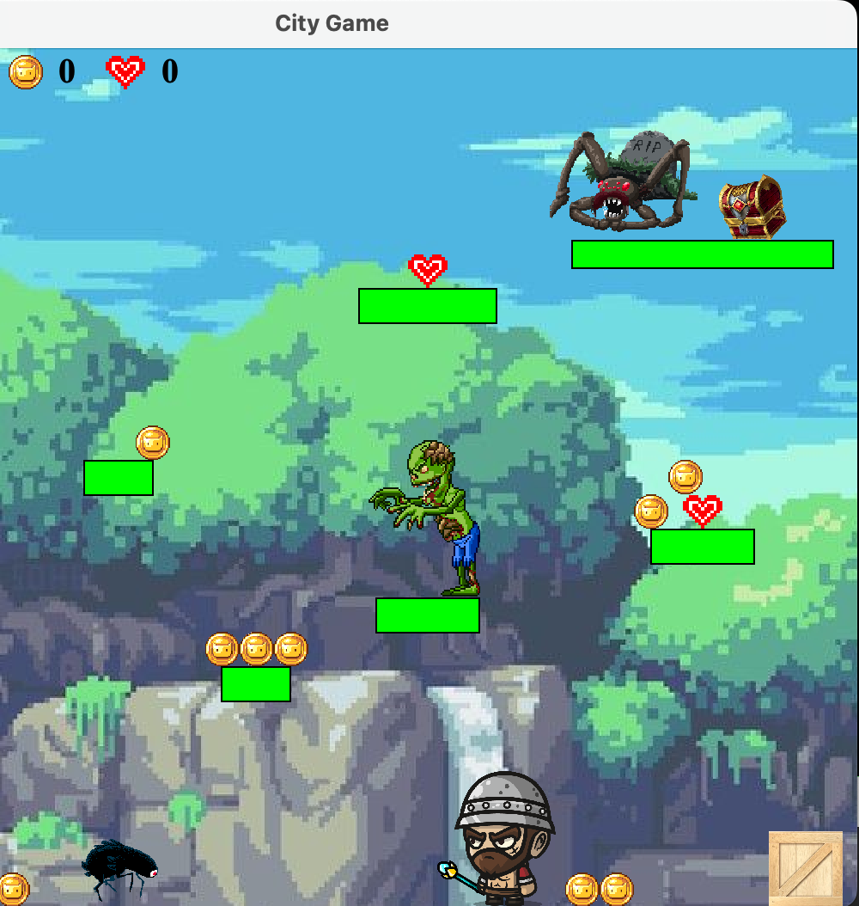
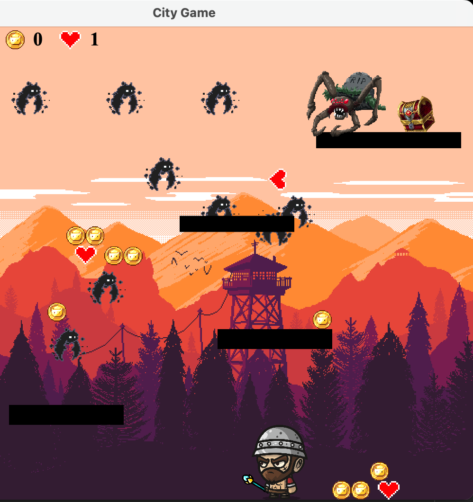
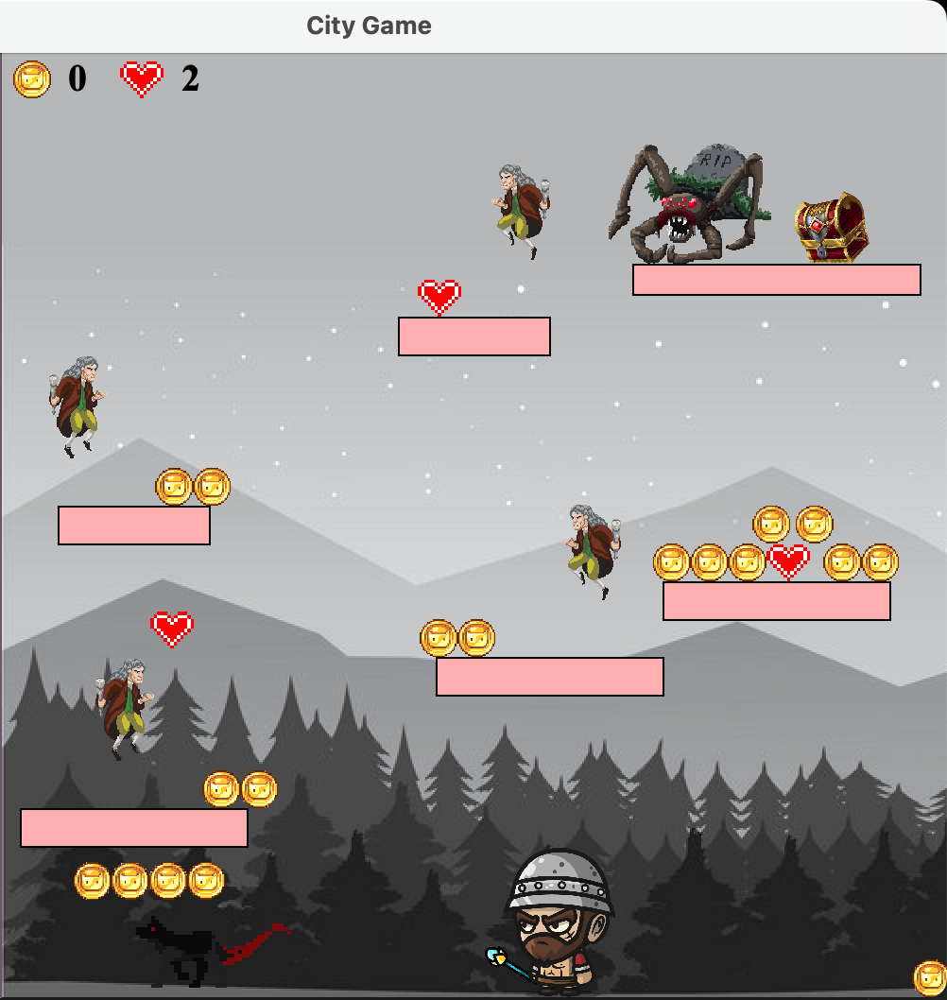
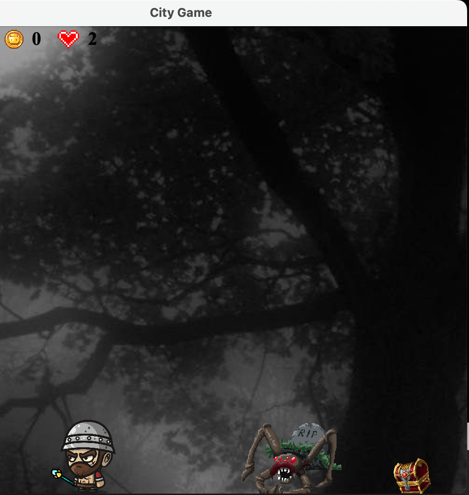

Your nameMy name is Ioannis Panagiotidis and I am a first year student at City University of London, studying Computer Science. |
||
|
|
||
Final Java game: Retro 2D Adventure GameThis game has 4 different levels with different enemies and different background music. In order to pass each level, you need to collect the treasure that it's being guarded by a spider. Every time an enemy touches you, you lose a heart and if you have less than 0 hearts then the game is over. I wrote all the sounds and music for the game by myself, except from the jump sound. With the help of a menu on the left hand side by pressing the escape key, you can mute the music, turn the volume up or down, change game levels or exit the game.
| ||
|     | ||